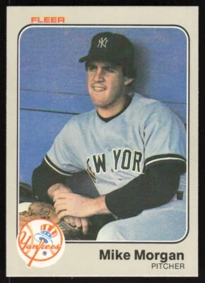

Mike Morgan "The Nomad"
Career Highlights & Facts
(Facts are AI-generated and may require verification)
- Selected as the 4th overall pick in the amateur draft.
- Appeared in major league games across 4 consecutive decades.
- Recorded 1403 career strikeouts as a right-handed pitcher.
Would you like to find out more about Mike Morgan?
Read Player Biography
Mike Morgan
January 4, 2012
/
in
BioProject - Person
/
by
admin
This bio is not assigned. Want to write a SABR bio? Contact
bioproject@sabr.org
.
Full Name
Michael Thomas Morgan
Born
October 8, 1959 at Tulare, CA (USA)
Stats
Baseball Reference
Retrosheet
Tags
None
Wikipedia Summary:
Michael Thomas Morgan is an American former right-handed pitcher in Major League Baseball. He played for 12 different teams over 25 years, and is one of 31 players in baseball history to appear in Major League baseball games in four decades (1978–2002). Upon his retirement, Morgan held the major league record for most major league teams played for (12), but this record was surpassed by Octavio Dotel in 2012 and Edwin Jackson in 2018. Because of this, Morgan was nicknamed "the Nomad" by his teammates due to his constant travel from team to team.
Career Totals
| WAR | W | L | ERA | G | GS | SV | IP | SO | WHIP |
|---|---|---|---|---|---|---|---|---|---|
| 26.2 | 141 | 186 | 4.23 | 597 | 411 | 8 | 2772.1 | 1403 | 1.400 |
Statistics via Baseball-Reference.com
The Original Clue